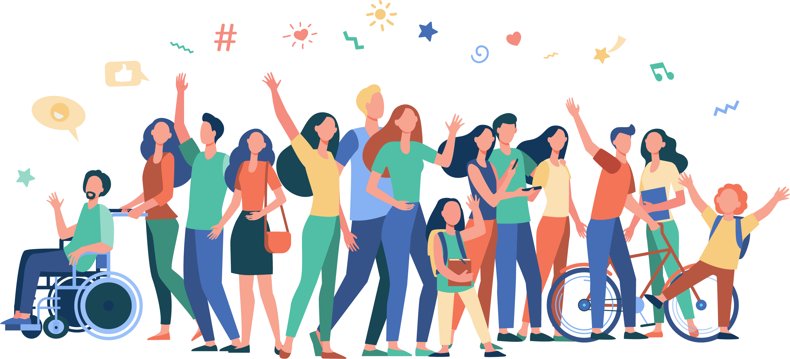

DSC-USTP is dedicated to providing a harassment-free and inclusive event experience for everyone. All participants of DSC-USTP Solutions Week, including in-person and online attendees, event staff, speakers must abide by the following policy:
Meet other students on different campuses interested in developer technologies. All are welcome, including those with diverse backgrounds and different majors.
Learn about a wide range of technical topics where new skills are gained through hands-on workshops, in-person training and project building activities.
Apply your new learnings and connections to build great solutions for local problems. Advance your skills, career, and network. Grow by helping others learn as well.
We are all part of the same community, so be friendly, welcoming, and generally a nice person. Be someone that other people want to be around.
Treat everyone with respect. Remember to be respectful and constructive with your communication to fellow participants, speakers, mentors and event staffs. Do not get into flame wars, make personal attacks, vent, or rant unconstructively. Everyone should take responsibility and take the initiative to diffuse tension and stop a negative thread as early as possible.
Work together! We can learn a lot from each other. Share knowledge and help each other out.
Join in on discussions, ask questions, offer feedback, and help implement that feedback.
The policy includes talks, conferences, webinars, hackathons, social media, all participants, partners, sponsors, volunteers, speakers, staffs etc. DSC-USTP retains the right, at its own discretion, to deny access to, or exclude any person from, any DSC-USTP hosted event (including future DSC-USTP events) at any time. This includes, but is not limited to, participants who behave in a disorderly way or do not comply with this regulation, as well as the terms and conditions set out herein. The event organizers can take any action they find acceptable if a participant engages in harassing or uncomfortable conduct, including warning or removing the offender from the event and banning the offender's account from attending online.
